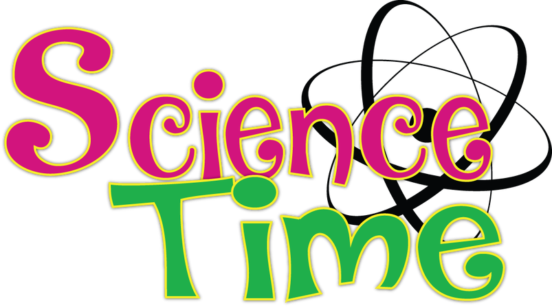
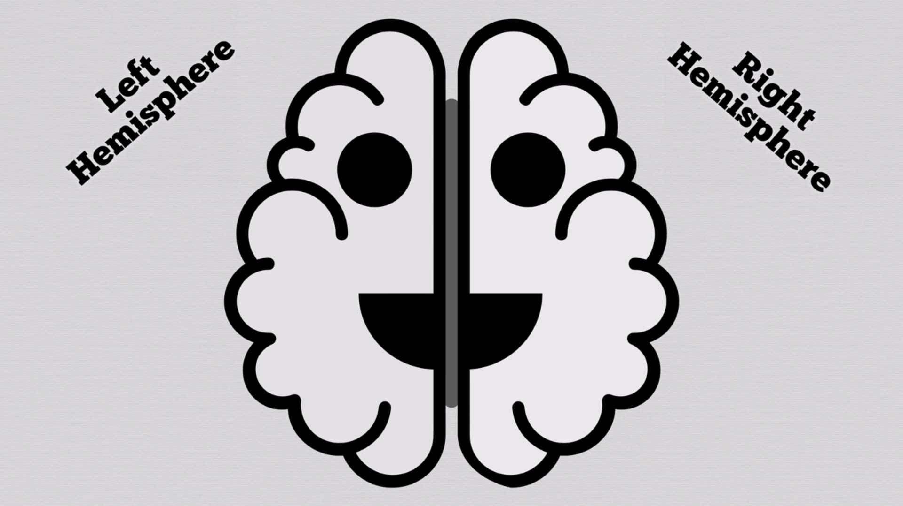
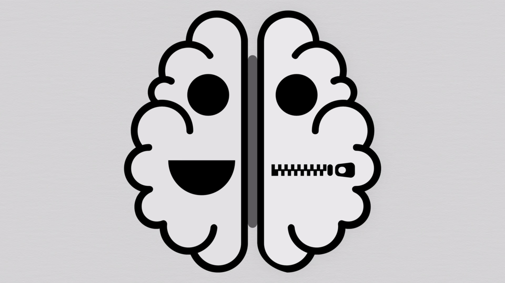

Personality
From Horoscope to Science
Mahdi Shiri
mahdi.shiri@outlook.com
Personality
noun | ˌpər-sə-ˈna-lə-tē , ˌpər-ˈsna- \
1. the quality or state of being a person
2. the condition or fact of relating to a particular person
3. the complex of characteristics that distinguishes an individual or a nation or group
Which One?
Horoscope: Astrological Forecast
Personality Science
Do you know about Barnum effect?
- High accuracy ratings to description of the personality
- Supposedly are made to fit individuals
BUT...
They're vague and general enough to apply to a wide range of people
Example
- You have a tendency to be critical of yourself.
- Some of your aspirations tend to be pretty unrealistic.
- You have found it unwise to be too frank in revealing yourself to others.
- You prefer a certain amount of change and variety and become dissatisfied when surrounded by restrictions and limitations
So if you want to know yourself, Tell your day of birth and city of birth and favorite color :D
Variables influencing the effect
- The individual believes that the analysis applies only to him or her
- The individual believes in the authority of the evaluator
- the analysis lists mainly positive traits
It's time for Science :)

But a little philosophy first (evil laughing ^_^)
Which One?
Horoscope: Astrological Forecast
Personality Science
personality only makes sense when humans are able to Decide
Question:
How do you decide?
Hard Determinism vs. Libertarian Free Will
Determinism: The belief that all events are caused by past events.
Free Will: Some Human actions are free.
- You have some alternate options on that thing you call it free.
If it's considered that we can choose literally, we've choosen one approach for usual situation is known as Personality
- It is a big option with High Priority
Question:
I really think all of our decisions refer to past events which are determind for each individual. every little things affect our free will : )
What do you think?
How does it originate and develop?
- Biological: heredity, the brain and the physical structure. - Family: initially starts with contact with the mother. - Cultural: social group, social class - Situational: effort, experience and the interaction with the environment.
Personality Psychology
The most influential approaches in personality science is known as Trait Theory
It aligns you along 5 dimensions which are normally distributed
So what are the Big Five?...
OCEAN
Openness
Conscientiousness
Extroversion
Agreeable
Neurotic
16 Personalities (The MBTI)
- A test to know how we perceive the world around us and make decisions
- Have some correlation with four of the Big Five personality traits (OCEA)
- One of these four functions is dominant for a person most of the time
Take a test
"16personalities.com" provides The MBTI test for free. It also extends the trait "Neurotic".
combined 5 aspects: - Mind (Introverted vs. Extroverted)- Energy (obServant vs. iNtuitive)- Nature (Thinking vs. Feeling)- Tactics (Judging vs. Prospecting) - Identity(Assertive vs. Turbulent) to define personality.

Fun Fact (Split Brain)

The wire of nerve can be cut... What happened next?
Functionality
- People seemed the same
- Only left brain can speak
- It's not challenging to draw two separate objects
- You might get a disaggrement when you ask a question
I hope you got something instead of time
if you would like to see:- My presention online: O-Q.github.io
- Source code: github.com/o-q/o-q.github.io
- My doc + Refrences: goo.gl/QW8fdw